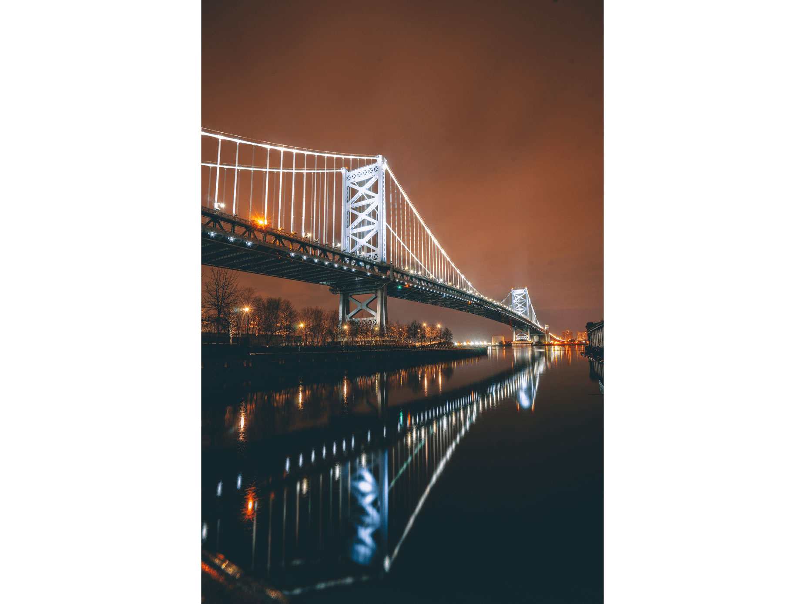
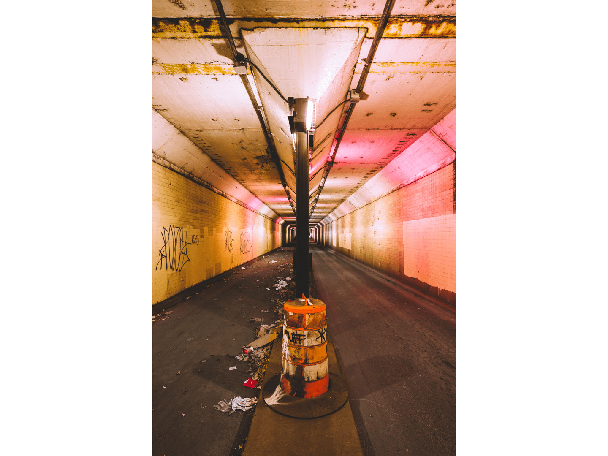
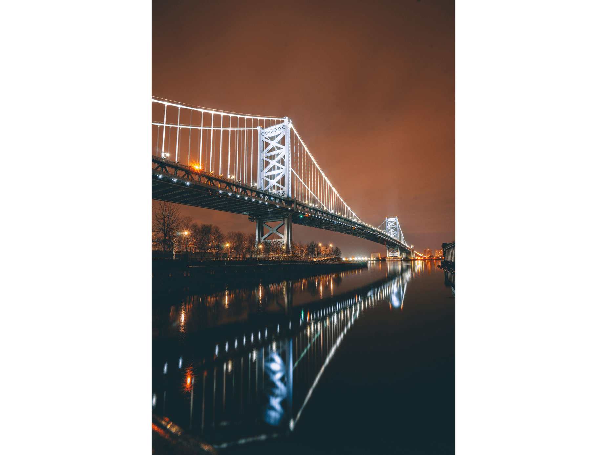
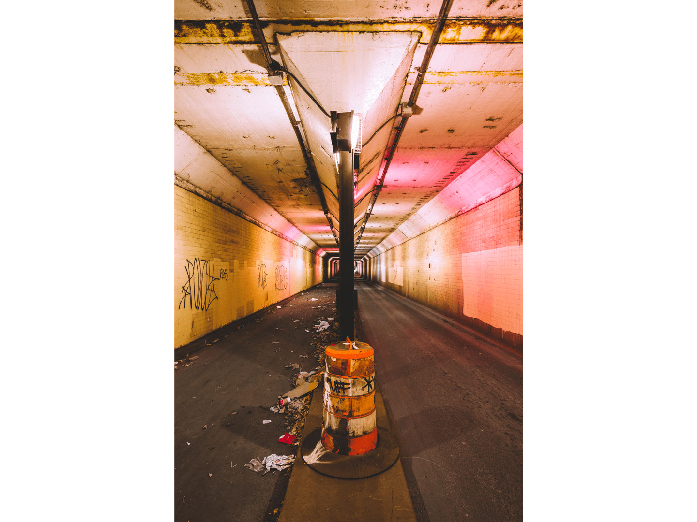
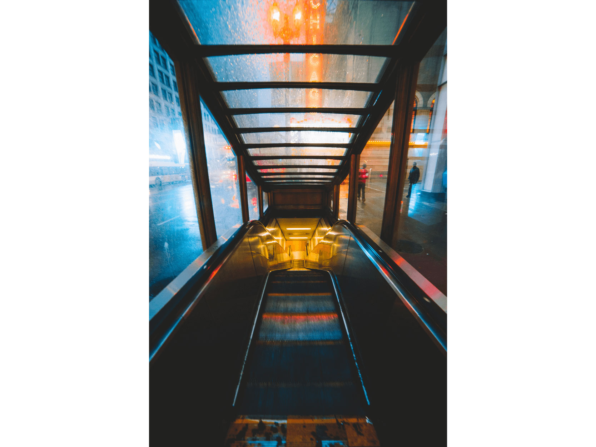
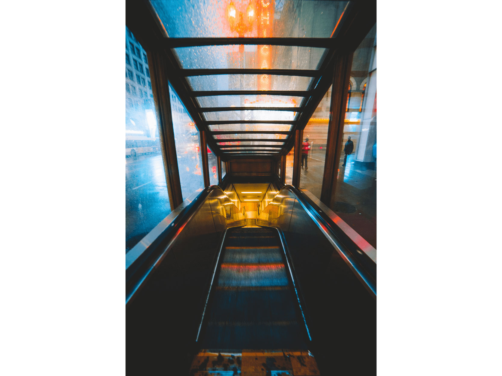

MY WORK
Here are projects that I've worked on.
My Github

CTO.VISUALS Visualizer
Web Audio API
Using Javascript's Web Audio API, I took the frequency data from an audio file and used canvas to manipulate how the data points looked visually. Combining pixel manipulations and differnt audio nodes,
I added filters that can alter the visual and sound. I used Material Design Bootstrap for the UI.

Unity: Asteroids Game
The goal of this project was to recreate the classic game, Asteroids. Being very new to Unity, I encountered many difficulties while working on it, for example refrencing a prefab instead of an instance of a Gameobject. I coded this in C#, which is a language that I am familiar with and comfortable with. After completion, I learned how to use Unity more efficiently and gained confidence in my programming skills. I started the project with no idea how to start and finished it feeling accomplished.
RIT Photo Cage, Mobile Application Design
Being a student at RIT and utilizing the 'Photo Cage', I started to discover an underlining problem that I would encounter often and that was not knowing anything about the equipment until I was physically there and not remembering when my equipment was due. Out of the hundreds of students who are actually photo majors, I thought that it can't be possible that I am the only one with this problem. With another student, we came up with an idea of a "RIT Photo Cage" App that would essentially be the ultimate solution. It would notify students when their equipment is due, what is available, the cages' inventory, which camera model performs best, and so much more! I feel that this app would serve users of the "Photo Cage" a security knowing that they are getting the best experience that they can get from it.
- Created with Photoshop and Illustrator
- Medium Fidelity
- Group Project

Connect 4 Game
My partner and I decided to take a swing at created the classic and popular game of Connect 4. We used HTML, CSS, and Javascript to create this game and the concept of DOM to develop.This project allowed me to dive deeper into Javascript and learn more about the programming language itself. One big problem we ran into was trying to figure out a algorithm that would detect the winners. After countless attempts and getting help from other friends, we figured out a way. I can definitely say that after creating this game, I am more comfortable with the Javascript language.


Anti-Smoking Social Awareness Poster
As a final project for my design course, I had to pick a social awareness topic and create a poster about it. I chose to make my posters about anti-smoking because it was something that impacted my personal life. I felt a strong connection to this topic and believed that having that connection would help me design a poster that spoke with the viewers more. I revolved around the concept of clever graphics so I can approach smokers in a way that was not blunt and straight forward. For all three posters I conveyed the idea of how smoking is not only linked and affecting the user, but the people around.;-

 



 
